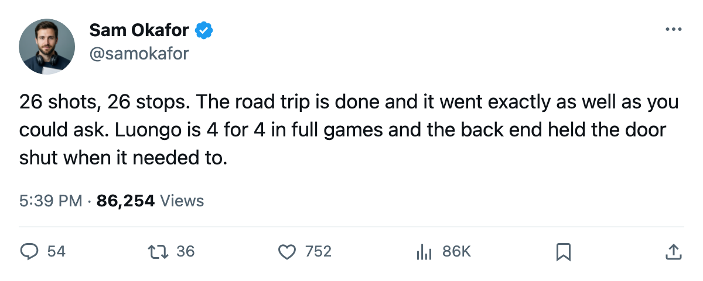

MTL 0, LEAFS 2: Luongo stops 26, and the road trip ends 3-0
The shutout opens the season series against Montreal, and Boston visits tomorrow
 Sam OkaforLeafs beat reporter · Queen City Telegram
Sam OkaforLeafs beat reporter · Queen City Telegram
Code Green

Toronto blanked Montreal 2-0 on Thursday, finishing its opening road trip 3-0-0 and taking the first game of the season series against  Montreal Canadiens.
Montreal Canadiens.  Roberto Luongo95 faced 26 shots and stopped every one.
Roberto Luongo95 faced 26 shots and stopped every one.
Luongo has started 4 of  Toronto Maple Leafs's 6 games, with Maxime Ouellet86 in for 2. The Conn Smythe winner from last June logged 59.8 minutes per game across his starts, playing essentially full games. His first shutout of 2005-06 came against the division club that sits last in the Northeast at 1-3-1.
Toronto Maple Leafs's 6 games, with Maxime Ouellet86 in for 2. The Conn Smythe winner from last June logged 59.8 minutes per game across his starts, playing essentially full games. His first shutout of 2005-06 came against the division club that sits last in the Northeast at 1-3-1.
The blank closes a stretch where the defence leaked. After conceding 1 goal in the season's first 2 games, Toronto gave up 3 to Pittsburgh on 2005-10-14, 2 at New York on 2005-10-15, and 4 to Phoenix on 2005-10-17. That is 9 goals in 3 games. Thursday held Montreal scoreless on 26 shots.
The Maple Leafs sit at 5-1-0 with 10 points, first in the Northeast.  Buffalo Sabres is 2nd at 6 points in 4 games. Toronto's away record reads 3-0-0; at home it is 2-1. The team has scored 23 and allowed 10.
Buffalo Sabres is 2nd at 6 points in 4 games. Toronto's away record reads 3-0-0; at home it is 2-1. The team has scored 23 and allowed 10.
 Rostislav Klesla87 logs 26.7 minutes a night on the top pair with
Rostislav Klesla87 logs 26.7 minutes a night on the top pair with  Barret Jackman86 at 27.8.
Barret Jackman86 at 27.8.  Tomas Kaberle85 and
Tomas Kaberle85 and  Jiri Fischer84 handle the second pairing. The Norris Trophy winner
Jiri Fischer84 handle the second pairing. The Norris Trophy winner  Bryan McCabe84 has not played this season. Steve Eminger82 and
Bryan McCabe84 has not played this season. Steve Eminger82 and  Ron Hainsey77 remain on the bench.
Ron Hainsey77 remain on the bench.
Boston visits with its second-line left wing out
 Boston Bruins comes to Toronto on 2005-10-21, the first meeting of the season between these clubs. Boston is 2-1-1 with 5 points through 4 games, 13 goals for and 11 against. The Bruins won 4-2 at Calgary on 2005-10-17.
Boston Bruins comes to Toronto on 2005-10-21, the first meeting of the season between these clubs. Boston is 2-1-1 with 5 points through 4 games, 13 goals for and 11 against. The Bruins won 4-2 at Calgary on 2005-10-17.
 Sergei Samsonov82 will not play. He carries a neck injury and returns on 2005-11-09, a stretch of nearly 3 weeks. He is rated 87 overall and skates second-line left wing for Boston.
Sergei Samsonov82 will not play. He carries a neck injury and returns on 2005-11-09, a stretch of nearly 3 weeks. He is rated 87 overall and skates second-line left wing for Boston.
Toronto's schedule after Friday reads  Florida Panthers on 2005-10-23,
Florida Panthers on 2005-10-23,  New York Rangers on 2005-10-26,
New York Rangers on 2005-10-26,  Mighty Ducks of Anaheim on 2005-10-28, and
Mighty Ducks of Anaheim on 2005-10-28, and  Atlanta Thrashers on 2005-10-31, all at home.
Atlanta Thrashers on 2005-10-31, all at home.
